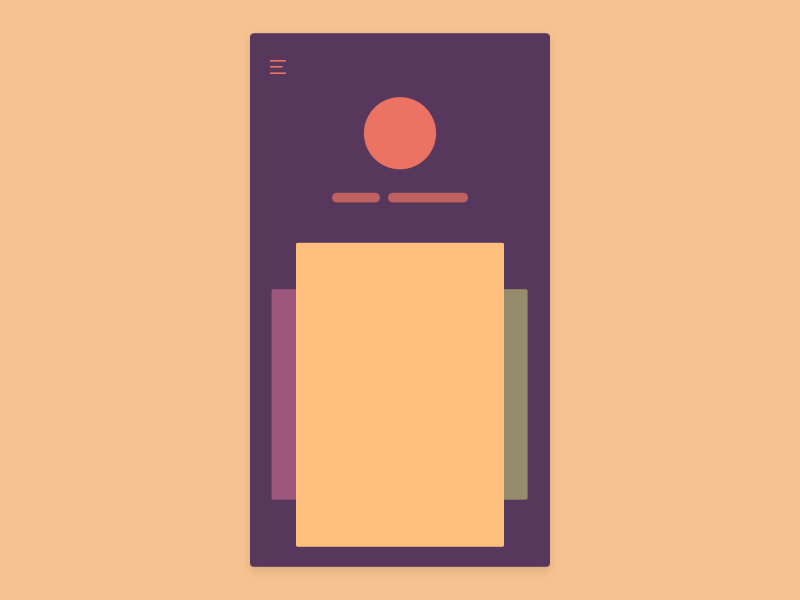

EXTRA EXTRA READ ALL ABOUT IT!
What are Micro-Interactions
and Why Should We Care About Them?
Unlike other forms of animation that exist solely to create the illusion of movement, micro-interactions directly engage the user, enabling him/her to accomplish a variety of tasks and interact with the product in an intuitive and effective way.
Even if you don’t know what micro-interactions are, you engage with them on a regular basis. Each time you use an app or web-based product to accomplish a particular task — whether it be reading the news, making a purchase, playing a game, creating a profile, or adjusting your settings and notification preferences — every individual action you make constitutes a micro-interaction. Micro-interactions are seamlessly woven into a product’s platform, making their functions transparent and accessible, effectively improving the user’s overall experience
Principles of Micro-Interactions
There are three principles that should be considered when using micro-interactions.

1. Continuity (and Subtlety)
Micro-interaction elements should be subtle so that when a user makes an action, there is a continuous flow in his/her experience. For example, if we creating a scrolling animation in a long feed, the user should be able to focus on the contents of the page rather than the scrolling animation itself.

2. Predictability
Quality micro-interactions have an element of predictability that enables the user to navigate a product effectively and efficiently. The user can accurately predict the effects of their actions, feel comfortable reversing them, and confident in their ability to perform as expected.

3. Transformability
Fluid transitions between multiple screens and well-defined transformations of the various objects within them are key aspects of quality micro-interactions. They enable the user to develop an intuitive understanding of the relationships between screens and the elements within them.